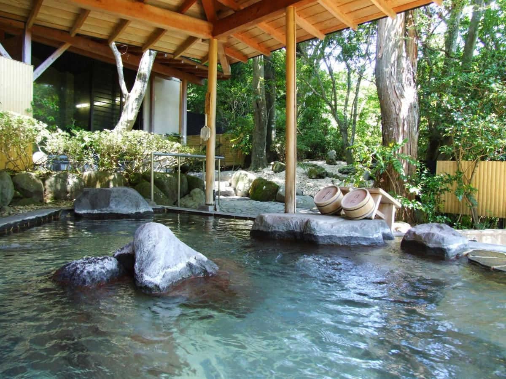
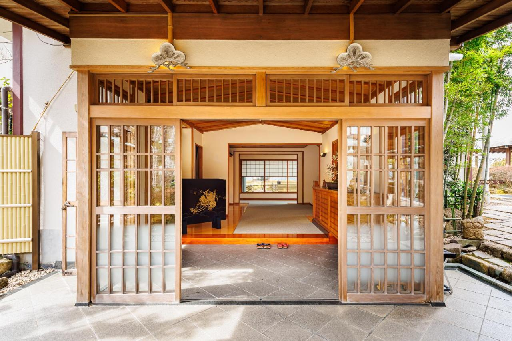

第二章 · STOP 02 · 箱根
Hakone · Yoshimatsu
1 night
1 night
A short trip from Tokyo into a volcanic valley of hot springs, cedar forest, and — on a lucky morning — a postcard view of Mt Fuji.
The whole day is the experience: an afternoon check-in, a soak in our own open-air bath, kaiseki dinner course-by-course in our room, and a traditional breakfast before we head back down to catch the Shinkansen west. Slow, quiet, and indulgent.
A small ryokan with private open-air onsen in every room and kaiseki dinners served in-room.


A stone thermal bath on our own deck, open to the mountain air — good at sunset, better at dawn, best under December stars.
Course after course of seasonal small plates: sashimi, a clear broth, grilled fish, wagyu, rice & pickles — served quietly in our room.
From the ropeway at Ōwakudani or across Lake Ashi — December gives the clearest views of the year.
The vermillion "heiwa no torii" rising out of Lake Ashi — a quick walk from the pirate-ship boat pier (yes, really).
A crossing of the caldera lake on Hakone's famous pirate-ship ferry, with torii gates, and cedar-lined shores.
Short walks through the cryptomeria groves near Moto-Hakone — cold, fresh, and just about empty in low season.
Mid-morning departure, lakeside lunch, Lake Ashi in the afternoon.
Onsen soak, kaiseki dinner in-room, quiet evening in yukata.
Traditional breakfast, one more soak, then the Shinkansen train to Osaka.